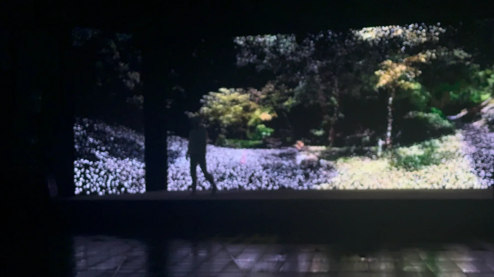
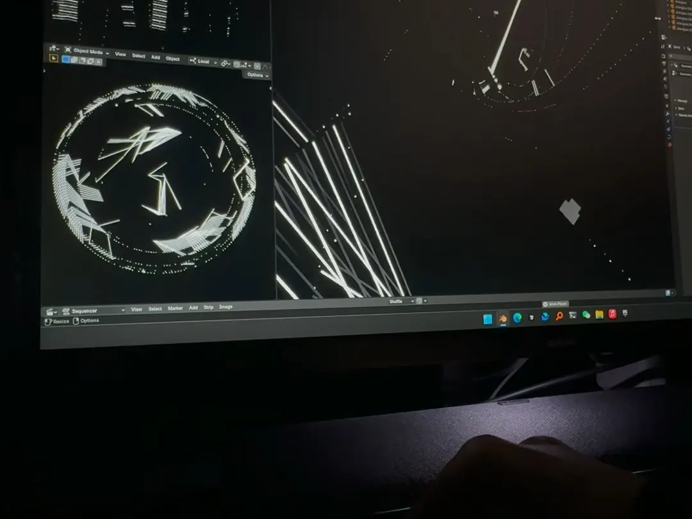
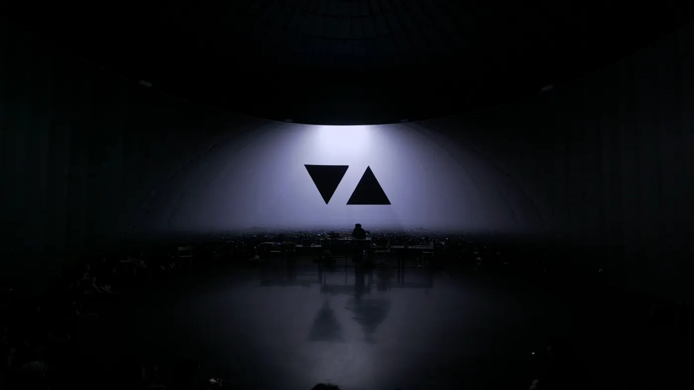
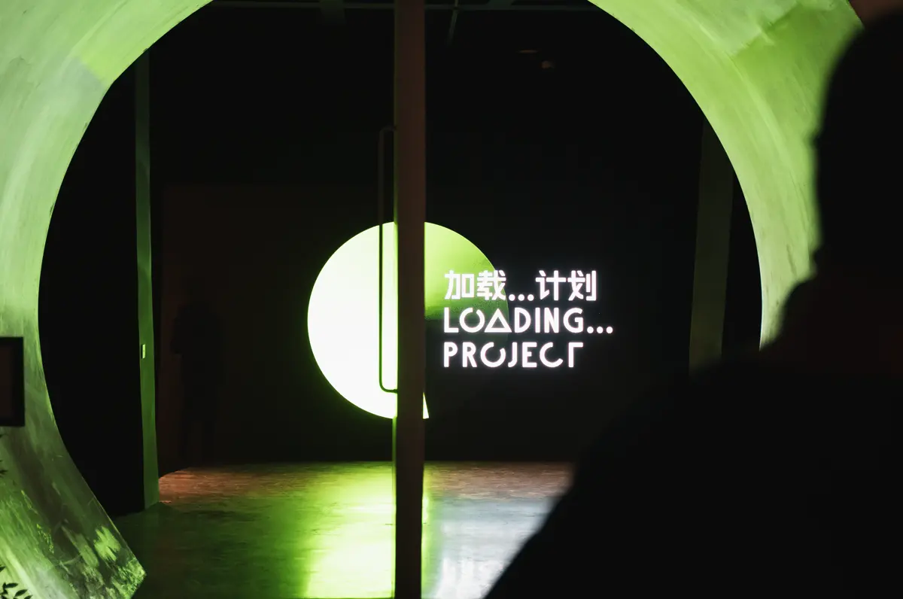
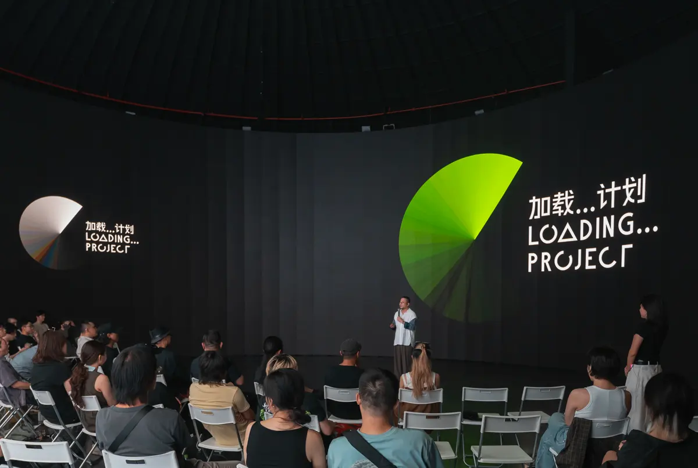
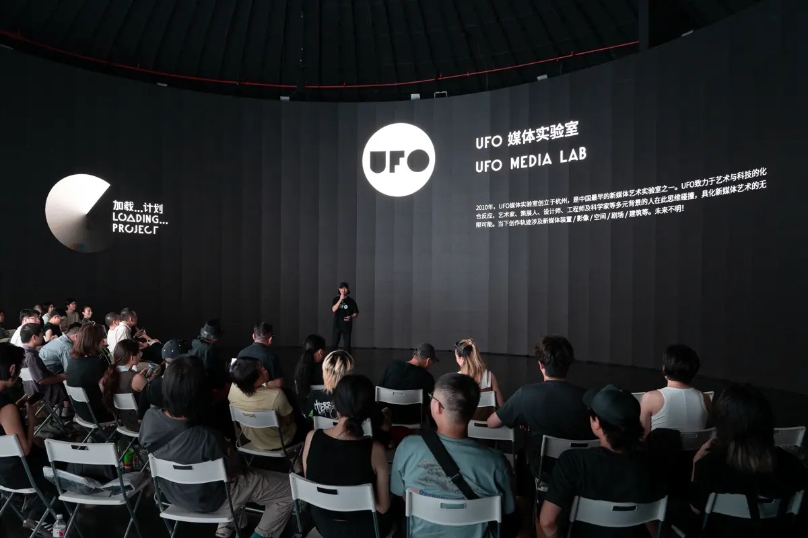
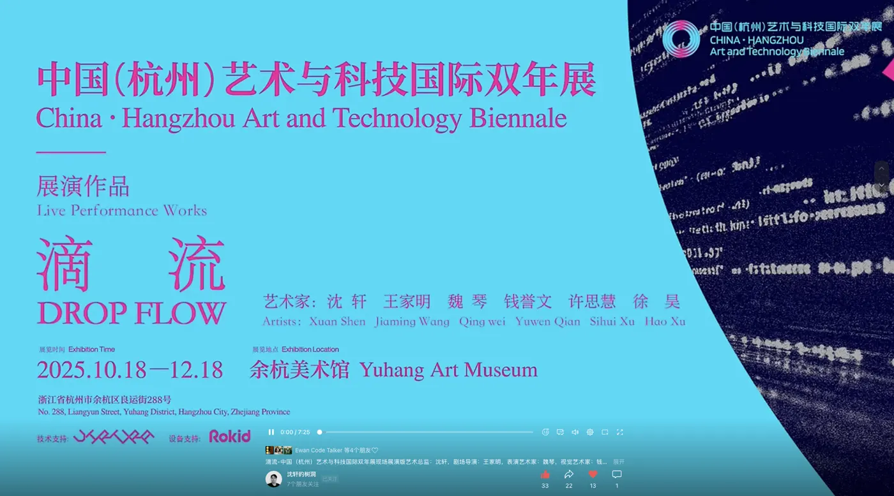
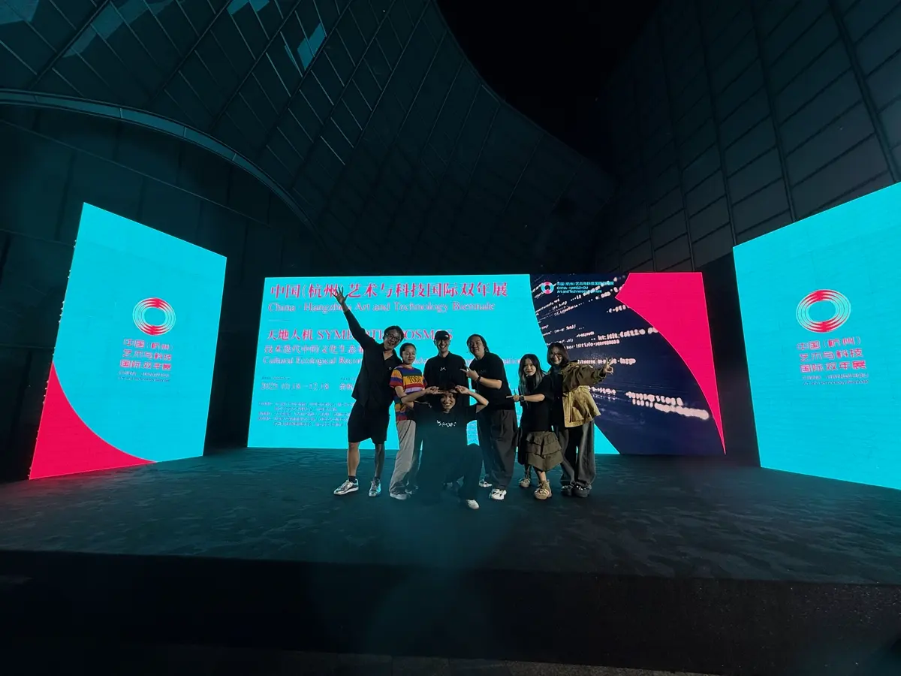
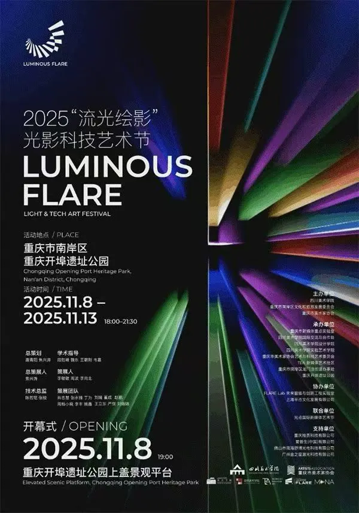
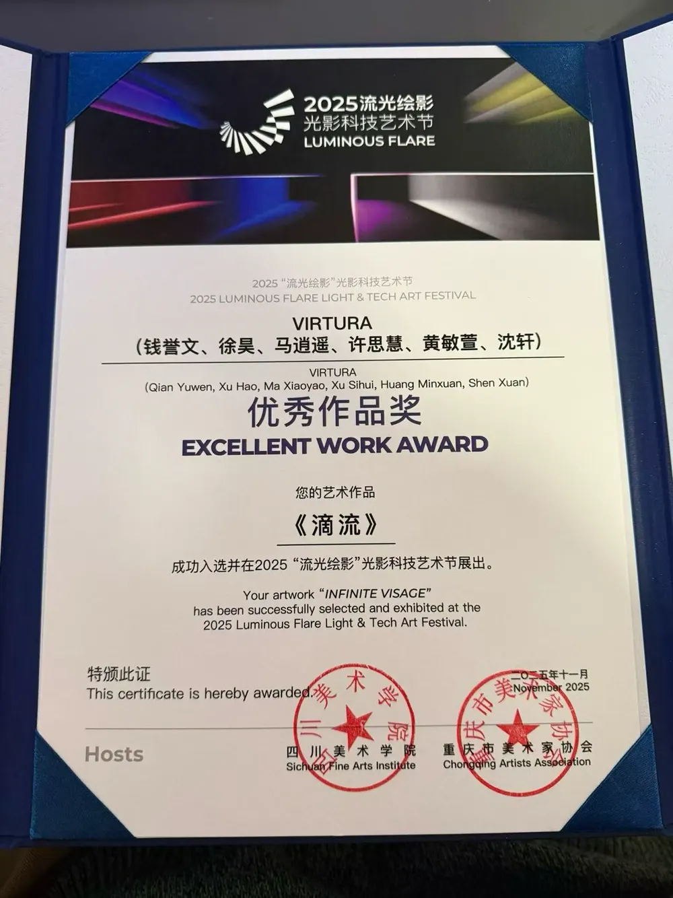

作品概述
《滴流 Drop Flow》从一滴水的声音开始，处理 drop 之后并不爆发、而是继续流动的状态。作品不把影像理解为屏幕上的平面内容，而是把声音、身体、观看位置、空间尺度和显示介质组织成一个可以进入的场域。

《滴流 Drop Flow》从一滴水的声音开始，处理 drop 之后并不爆发、而是继续流动的状态。作品不把影像理解为屏幕上的平面内容，而是把声音、身体、观看位置、空间尺度和显示介质组织成一个可以进入的场域。
在 UFO Terminal、Rooooooom719 和杭州双年展的不同现场中，作品持续测试同一个问题：屏幕不是发光的平面，而可以成为光学引擎。图像、雾化介质、侧屏光影、身体表演和声音反馈共同塑造观众的空间感。
这些阶段不是单纯的资料编号，而是作品从技术原型、内部现场、公开展演到空间计算方向逐步展开的创作脉络。

早期实验以 OSC、Blender Python 和几何节点为底层，验证声音脉冲驱动画面从点、线到面的实时流动。画面保持纯黑白灰度，不引入具象自然意象，重点呈现“从一个点触发的流动秩序”。




这一阶段在上海 UFO Terminal 的真实空间里建立三幕结构：初始脉冲、边界消融、高斯点云数字花园。作品以环形屏、空间声场、体积雾和实时生成系统构成现场关系，每一次演出都会生成不同的视觉状态。
Rooooooom719 让前一阶段的实时系统进入公开演出结构。视觉继续处理 360 度包裹感、现场光影和被注视的身体经验，同时把团队成员的图像、空间资料与拼贴结构整理为可浏览的空间样本。



作品进入更完整的公共艺术语境：杭州国际电子音乐作曲比赛 C 组一等奖、首届中国（杭州）艺术与科技国际双年展开幕式展演、2025“流光绘影”光影科技艺术节优秀作品奖。杭州现场整合 17000mm × 5000mm 沉浸式大屏、身体表演、VR 头显与球形全景视频。
后续方向把作品从单向播放的视听内容，推向可进入、可游走、可多人共在的数字空间。实时引擎、OpenXR 和头显设备不只是新的播放介质，而是重新测试身体移动、观看方向与图像生成之间的关系。
这些公开视频和图像是进入作品的主要入口。页面保留每条材料的现场身份，让不同阶段的图片和文件不再混在一起。
实时音画系统的早期公开记录。
上海 UFO Terminal 现场实录。
公开音画现场与排练状态。
从屏幕内容转向包裹式空间观看。
公共展陈语境与身体表演段落。

重庆光影科技艺术节的公开成果证明。
空间方向的阶段性记录。
Blender OpenXR 与实时渲染测试。
这些文字来自作品归档中的创作说明，整理到页面中作为正式阅读内容。
作品的核心原点不是电子乐常见的峰值爆发，而是 drop 之后的空缺与平静。声音从一滴水开始，画面从一个点开始，二者共同进入持续的流动。
UFO 阶段的关键不是增加屏幕数量，而是让侧屏的影子、高光和环境倒影与主画面形成透视关系。屏幕边界被模糊后，图像开始像物体一样进入现实空间。
高斯点云数字花园来自对真实自然片段的扫描与转译。它不是替代真实自然，而是把旅行、采样和记忆变成现场音画系统可继续调度的材料。
一部分团队阶段素材被整理为空间样本，让 Drop Flow 不只停留在视频记录中，也可以作为网页中的空间对象被浏览。
这个样本把成员影像、现场资料和拼贴结构转成可网页嵌入的空间入口。它与公开视频共同构成 Drop Flow 在网页中的观看方式。
页面中的媒体来自本地归档、公开影像和空间样本。更完整的项目说明仍保留在作品文档中。